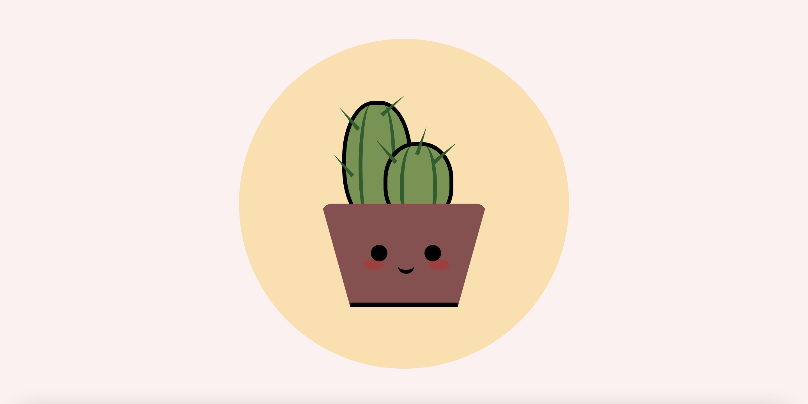
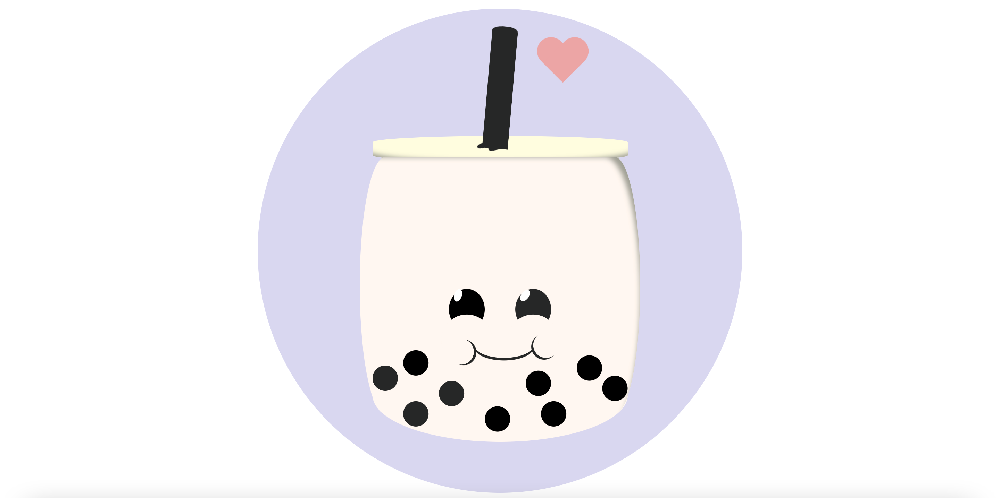
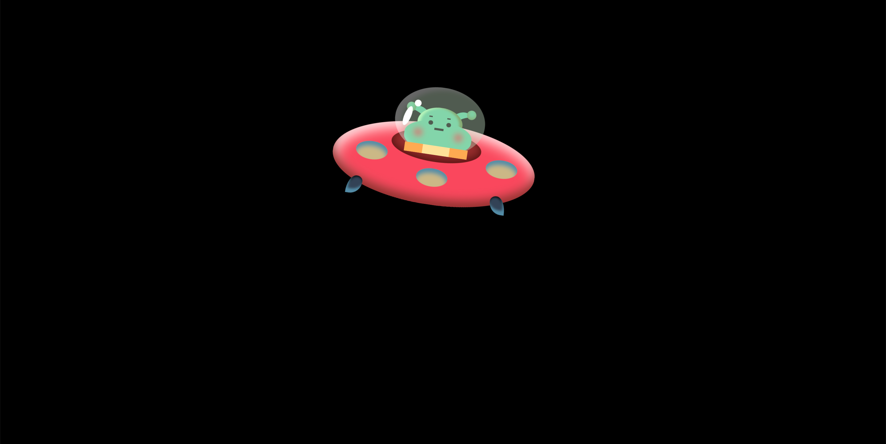

CSS UFO
CSS UFO made using CSS and SASS. This also includes a bit of animation where the UFO is gliding and eventually disappears.
This was the second walkthrough I did. This took longer to make which was good practice when it came to learning the design processes of different CSS art projects. Afterwards, I created the Boba art image.